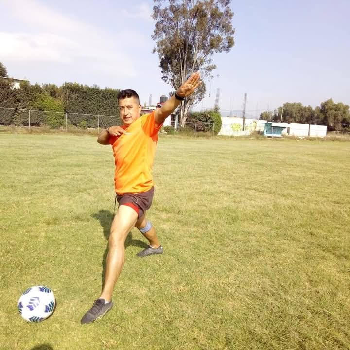
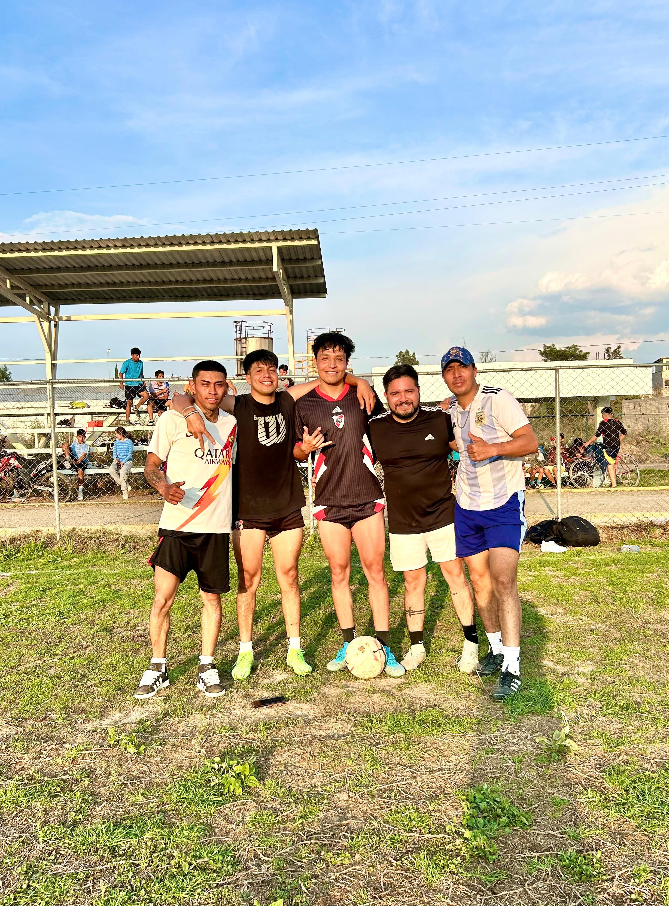

Entrenamientos para dos categorías: semi-profesional y amateur.
Únete AhoraUn entrenamiento dirigido por Ernesto, alias "Jicaras".
Dos niveles: amateur y semi-profesional.
Entrenamientos presenciales por solo $15 pesos. Desde sus inicios con jóvenes promesas como Gerardo Aladair.

Semi-profesional: Martes y Jueves - 4:00pm a 6:00pm
Amateur: Miércoles y Viernes - 4:00pm a 6:00pm
Número de teléfono: 55-3711-0412